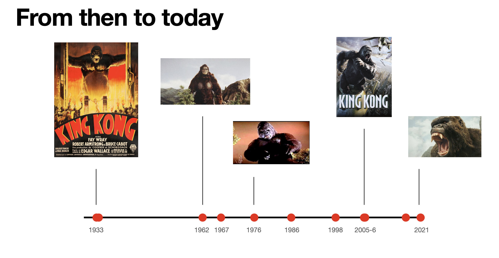
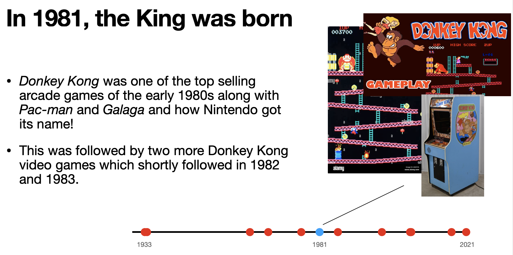
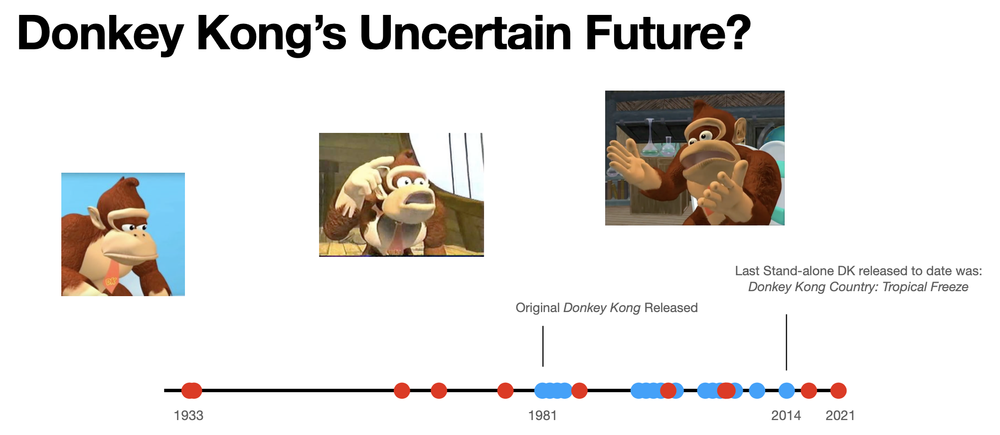
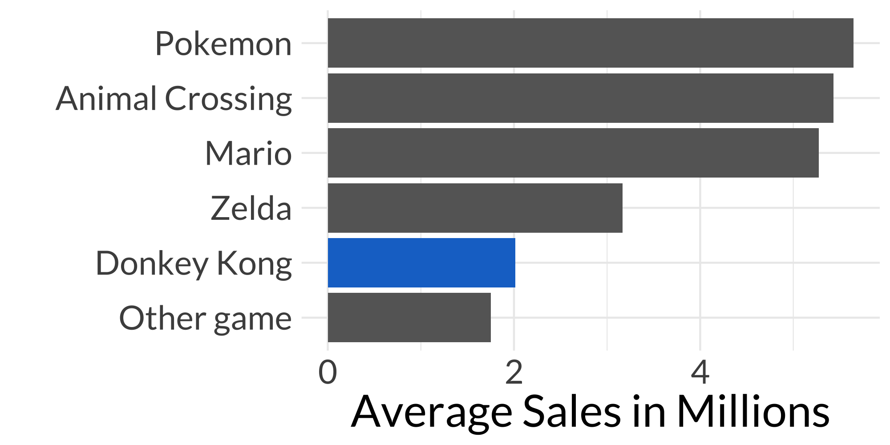
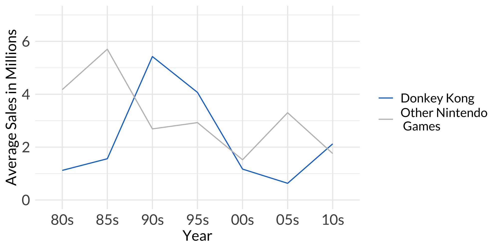

Donkey Kong: King of the Jungle
Look at the history of Nintendo’s Donkey King with a little data sprinkled in

Introduction
So, a bit ago I was invited to one of those “powerpoint nights” where everyone makes a powerpoint about a topic of thier choice. Growing up, I played a lot of mario games including Super Smash Bros and I always thought Donkey Kong was a funny character, so I decided to do a little research and do my powerpoint on him. Since, I already did all that research and the nerds among you might find this interesting, I decided to write up my findings here as well.
Data
You’re probably wondering why there’s a data section. Well, on brand as it were, I decided to look up some video game data and filter to Donkey Kong video games to see if I can make a couple data visualizations for it.
I found a dataset on kaggle with records for over 16,500 games.
DK Origins
So, in this process I found out that Donkey Kong was originally inspired by King Kong first released in 1933. Turns out, there have been more than a few King Kong films over the years.
Each red dot represents a different king kong movie. Also, I think there may have been a film or two since 2021. I made this pptx originally in 2022 I believe.

Nintendo was aiming at appealing to a western audience and made a character after the hit King Kong franchise called Donkey Kong. They release the first Donkey Kong arcade game in 1981 which was a big hit! It was one of the first games to help Nintendo make its name.
SUED!!

Originally, Donkey Kong looked more neutral like King Kong as depicted below. But, Universal Studios caught wind of Donkey Kong and its success, and they sued Nintendo in 1984. Fortunately, they won, but Donkey Kong’s appearance changed into more of how we recognize him today. Nintendo later trademarked the phrase, “Its on like Donkey Kong!”

Donkey Kong Today
Since that time, Nintendo has made several Donkey Kong video games, but in recent times there have not been as many - last stand alone game in 2014.

Blue dots represent a stand-alone DK game released.
Let’s look at some data which may give us some hints as to why the slowing down. King Kong movies have been released just as consistently throughout this same time period which is an interesting contrast to the decrease in King Kong video games. Assuming that King Kong movie sales have stayed about over time, this could suggest that Nintendo’s Donkey Kong and Universal’s King Kong have become separate entities in customer’s minds whereas before they may not have been. If this were true, it may affect sales on one entity and not the other. I know originally I didn’t associate the two.

Our chart pretty clearly shows sales for other games seem to be a bit more popular looking at all sales in the entire time period of our dataset.

Looking at sales over time, we see that sales have decreased over time hitting an all-time low in the early 2000s. However with the release of some of the later DK games sales increased significantly. It is important to note that they made a few stand-alone DK games in the later time period on smaller devices like the 3DS. The games for the smaller devices are a bit cheaper than games for the Wii which may suggest the final number on this chart for DK games is a bit inflated.
Conclusion
Eventhough, we may not see a stand alone DK game again, it’s likely that we will see continue to see our king in games like Mario Party and Super Smash Bros.
Thanks for reading. Feel free to use the data and code for your own purpose.
Also, for fun, I attached the full slide deck I used in case you have your own powerpoint night coming up and haven’t prepared.
Resources to download appear in a sidebar that typically does not show on mobile devices. To download these resources, please view website on Desktop.